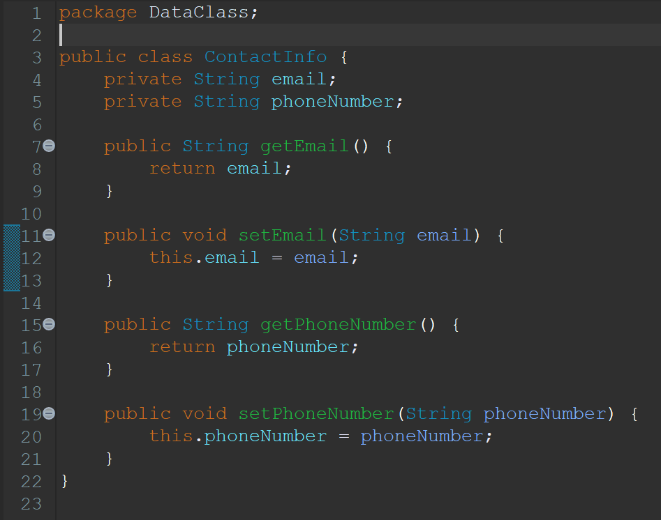
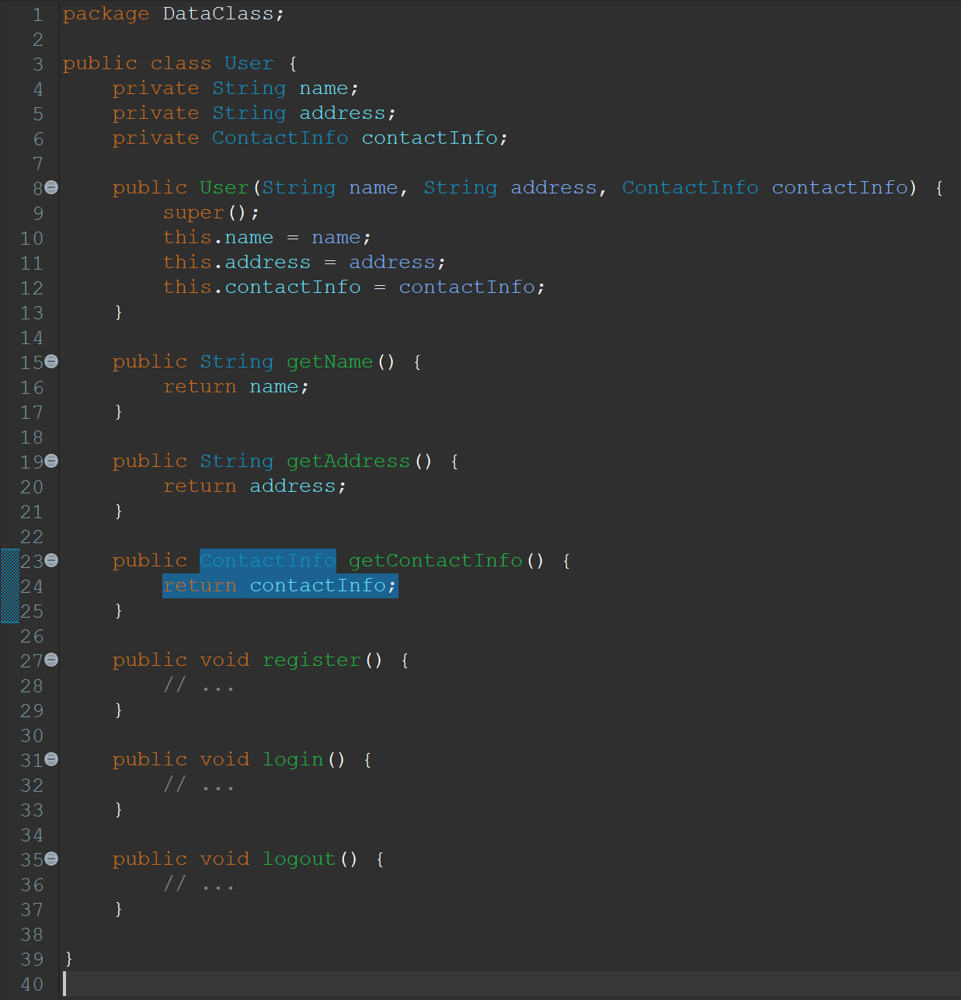
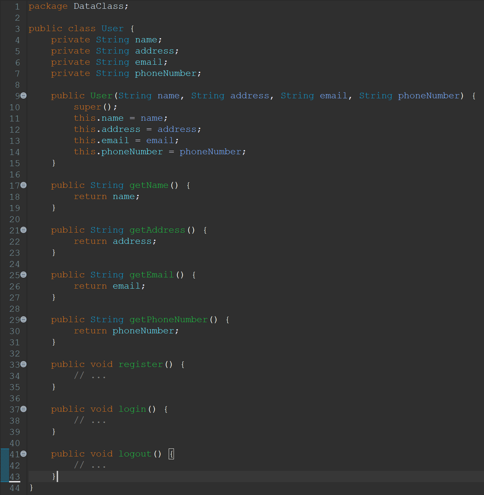

Data Class
Definisi
Data Class adalah sebuah code smell yang terjadi ketika ada satu class yang hanya berisi data field dan fungsi setter getter saja atau dapat disebut sebagai dumb data holders. Sebuah class yang baik idealnya berisi data field, constructor, fungsi setter getter (opsional), dan method yang diperlukan. Maka dari itu, biasanya class seperti ini dapat dipertimbangkan untuk dihapus saja dan digabung dengan class lain yang terkait.
Contoh
Before
Code:
ContactInfo.java
User.java
Alasan:
Class 'ContactInfo' hanya berisi data field dan fungsi setter getter saja tanpa memiliki method khusus yang dapat dilakukan dalam class. Sehingga alangkah baiknya untuk memindahkan data dari class ini ke class 'User'.
After
Code:
User.java
Hasil Perbaikan:
Maka dari itu, kita perlu memindahkan data field milk class 'ContactInfo' ke class 'User'. Setelah itu, kita dapat menghapus class 'ContactInfo'.